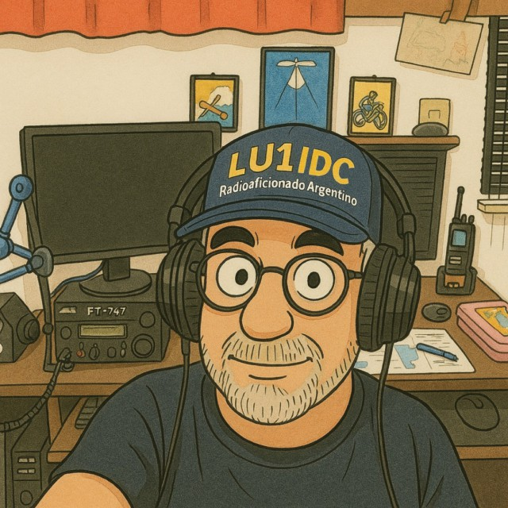

RX / TX
Equipos
- Icom IC-728
- Yaesu FT-747 GX
- Yaesu FT-1802M
- Baofeng UV-5R
Radioafición desde Misiones
Licenciado desde 2003 y finalmente en el aire desde 2024. Esta es la bitácora de mi estación, mis contactos y todo lo que sigo aprendiendo.
Ver mi actividad → Conocer la historia

Acerca de mí
“Lupinero” desde los años 80, la revista me llevó al aeromodelismo, la astronomía, el campismo, la electrónica y muchas otras actividades. Pero algo había quedado pendiente: entrar en el mundo de los radioaficionados.
Obtuve mi licencia en 2003. Veinte años después pude armar una estación operativa y salir al aire. Este sitio reúne ese camino, los contactos y las cosas que voy descubriendo.
Sueño cumplido · Diciembre de 2023La estación activa
La actividad de LU1IDC como una colección: entidades DXCC en un álbum de estampillas, grillas Maidenhead y contactos recientes.
Entrar a En el aire →El cuarto de radio
 El shack
Equipos, antenas y proyectos
El shack
Equipos, antenas y proyectos
RX / TX
Antenas
Herramientas
Linux y programas libres para registrar, decodificar, mapear y seguir satélites.
GG22KD
San Javier, a orillas del río Uruguay, es el lugar desde donde salen todas estas señales.
La colección crece
Experiencias, participaciones y logros obtenidos desde que la estación volvió al aire.
Archivo